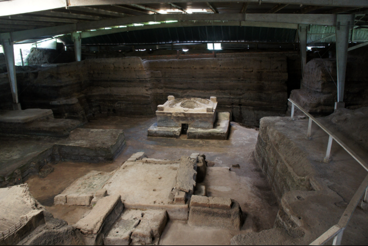
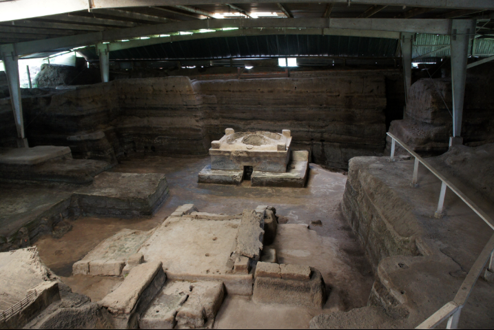

Discover Your Next Adventure — Explore Our Exclusive Tours Across El Salvador
At Discover-SV-Travel, we believe that the best way to truly experience El Salvador is through authentic, immersive tours that showcase the country’s breathtaking landscapes, rich history, and vibrant culture. Whether you’re seeking thrilling volcano hikes, relaxing beach escapes, or cultural explorations, our carefully curated small-group tours offer something unforgettable for every traveler. Let us guide you on your next adventure and help you create lasting memories.
Crater & Capital Culture Experience (Full-Day)


Explore the majestic El Boquerón volcano crater followed by a cultural journey through San Salvador’s historic downtown. Visit iconic landmarks including the Cathedral, National Palace, and colorful murals, finishing with an immersive experience at the National Library (BINAES). Transportation, guide, and refreshments are included for a full-day adventure combining nature and culture.
Imagine standing at the edge of a crater formed thousands of years ago, then stepping into the city where murals and monuments tell stories of resilience and hope.
El Tunco + Tamanique Waterfalls Adventure (Half to Full-Day)


Start your day hiking through lush trails to reach the hidden waterfalls of Tamanique, where you can swim and even try cliff jumping. After cooling off, head to the surf town of El Tunco to enjoy local restaurants, artisan shops, and a spectacular Pacific sunset. A perfect mix of adventure and beach life in one tour.
Climb hidden trails to discover emerald waterfalls, then end your day watching the sun melt into the Pacific at El Tunco’s iconic rock arch.
Ilamatepec Volcano Hike + Lago Coatepeque


Challenge yourself with a guided hike to the summit of Ilamatepec, El Salvador’s highest volcano. At the top, marvel at the vivid turquoise crater lake and sweeping mountain views. After the hike, relax at the panoramic Lake Coatepeque — take stunning photos, enjoy a lakeside lunch, or even rent a waverunner to make the most of your day.
They call it the sleeping giant — crowned by a turquoise crater lake that leaves even locals breathless. At the bottom, Lake Coatepeque sparkles like a jewel.
Suchitoto Cultural Experience


Discover the colonial charm of Suchitoto with its cobbled streets, art galleries, and historic churches. Visit beautiful Lake Suchitlán and learn about the region’s indigo dye tradition through an interactive workshop or artisan demo. A relaxing day full of history, culture, and local flavors.
Cobblestone streets, whitewashed churches, and stories painted in indigo — Suchitoto feels frozen in time, yet alive with local art and tradition.
Ruta de las Flores Coffee & Culture Day


Travel along the scenic Ruta de las Flores, renowned for its colorful colonial towns, vibrant murals, and lush coffee farms. Visit the Juayúa food festival, explore Ataco’s artisan markets and street art, and experience the thrill of Café Albania with its famous giant maze and swing. Wrap up your journey with a guided tour of a local coffee plantation — perfect for foodies, coffee lovers, and cultural explorers alike.
Through winding mountain roads, vibrant murals, and rich coffee aromas — discover why this route is loved by artists, foodies, and dreamers alike.
El Pital Highland Escape


Journey to El Salvador’s highest point and explore the misty cloud forest of El Pital. Enjoy cool mountain air, breathtaking views, and a relaxing nature walk.
In the misty highlands, ancient pines whisper secrets, and the cool air feels like stepping into another world far from the tropical coast.
Los Cóbanos Snorkeling Experience


Dive into adventure at Los Cóbanos, home to one of El Salvador’s most beautiful coral reefs. Discover vibrant marine life on a guided snorkeling tour, then unwind on the peaceful beach. All equipment is provided — making this the perfect experience for both beginners and seasoned snorkelers.
Beneath gentle waves, coral gardens hide sea turtles and bright fish — while fishermen share tales of shipwrecks and treasures still unseen.
Mayan Ruins Combo: Tazumal + Joya de Cerén
 

Step back in time on this tour of El Salvador’s top archaeological sites. Explore the impressive ruins of Tazumal in Chalchuapa and visit the UNESCO World Heritage site of Joya de Cerén, known as the “Pompeii of the Americas” for its perfectly preserved ancient village.
Walk among ancient pyramids and preserved villages, and feel the echoes of ceremonies and daily life from over a thousand years ago.